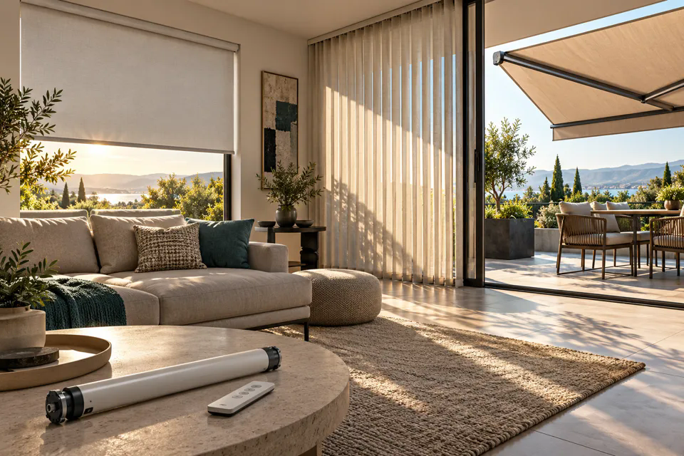

Roller y blackout
Telas, mecanismos y criterios para regular la luz y la privacidad.

Conocimientos sobre cortinas, toldos y automatización. Un espacio para compartir lo aprendido.
Durante años trabajé con sistemas de control solar. Hoy reúno acá conceptos, cuidados y recursos para comprender cómo funcionan y conservar ese conocimiento.
Explorá los sistemas, sus componentes y las diferencias que conviene conocer.
Telas, mecanismos y criterios para regular la luz y la privacidad.
Orientación, desplazamiento y componentes de grandes paños.
Lamas regulables para orientar la luz y controlar las visuales.
Protección exterior, motores tubulares y formas de accionamiento.
Pequeños detalles que hacen al funcionamiento de cada sistema.
Consultar con una foto ↗Reconocer el soporte y el tipo de pared o techo antes de elegir un anclaje.
Limpieza suave, revisión visual y cuidados para conservar los mecanismos.
Identificar cadenas, soportes, punteras, carros y mecanismos compatibles.
Registrar la falla y evaluar el estado del conjunto antes de intervenir.
Fichas introductorias para leer, consultar e imprimir.
Datos y fotografías para describir una abertura.
Un primer mapa de los componentes.
Qué información reunir para identificar un equipo.
Revisión y mantenimiento preventivo.
Ideas prácticas para observar y entender cada instalación.
Antes de elegir una cortina, conviene pensar qué luz queremos conservar, qué visuales necesitamos proteger y cómo usamos la abertura.
La placa del equipo y su manual son el punto de partida para reconocer sus características y controles compatibles.
¿Tenés una duda sobre un sistema, un mecanismo o un repuesto? Contame qué observás. Una foto y las medidas ayudan a entender la consulta.
Este sitio reúne mi experiencia en control solar. Podés enviar tu consulta por el formulario o escribirme directamente.
Consultar por WhatsApp ↗Marcelo Colombo · 298 488 1252
Completá tus datos y, si querés, adjuntá un archivo. Tu consulta nos llegará por correo.
El servicio confirmó el envío de tu pedido. Te responderemos al correo que indicaste.
Envío de archivos por correopatagoniatec@gmail.com
Envío de archivos por WhatsApp298 488 1252Pedidos simples. Soluciones prácticas.
Podés enviar fotos del sistema o del repuesto que necesitás identificar.